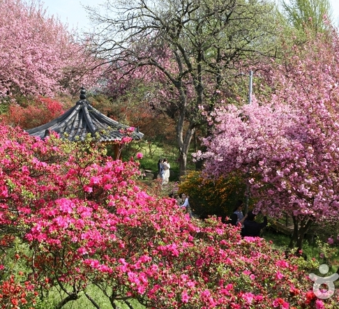

주요 관광지
-
전주전동성당
전주 전동성당은 사적으로 조선시대 천주교도의 순교터에 세워졌다. 이 성당 건물은 일제강점기에 지어졌으며 서울 명동성당을 설계한 프와넬 신부에게 설계를 맡겨 23년 만에 완공한 것이다. 겉모습이 서울의 명동성당과 비슷하며 초기 천주교 성당 중에서 매우 아름다운 건물로 손꼽힌다.
-

완산꽃동산(완산칠봉)
전주하면 완산칠봉, 완산칠봉하면 전주를 생각하게 할 만큼 전주의 대명사로 불리우는 산이 바로 완산칠봉이다. 천년고도 전주와 함께 이어 온 완산의 명맥이 호남평야로 흐르면서 익산과 군산 등으로 이어져 있으며, 동학농민운동때 격전이 벌어졌던 장소이기도 한 완산칠봉은 현재 숲이 우거진 시민공원으로 가꾸어져 있다.
-
국립전주박물관
1990년 10월 전북 지역의 문화유산을 연구·보존·전시하기 위한 목적으로 개관했다. 위탁유물을 포함하여 2만 4000여 점의 유물을 소장하고 있으며, 그중 1,100여 점의 유물을 상설전시하고 있다. 전북 지역에서 출토된 선사시대와 마한·백제시대의 문화재가 주류를 이루며, 그밖에 불교미술품, 도자기, 금속공예품, 역사민속자료 등이 있다.
-
전주덕진공원
전주역 북쪽 3km 지점에 있는 덕진호 일대의 유원지로, 시민공원이라고도 한다. 덕진제에 수양버들, 벚꽃나무가 늘어서고, 5월이면 창포와 연꽃이 수면을 메우는데, 특히 덕진 연꽃은 널리 알려져 있다. 공원 내에는 조경단을 비롯하여 취향정과 동물원 등이 있고, 수영장 ·테니스코트 등 각종 위락시설도 갖추고 있으며, 특히 호반을 가로지르는 현수교는 경관을 돋우는 명물이다.
맛집 및 카페
-

조점례남문피순대
한식
주소 | 전북 전주시 완산구 전동3가 2-246 -

풍년제과 본점
카페/베이커리
주소 | 전북 전주시 완산구 팔달로 180 -
현대옥
한식
주소 | 전북 전주시 완산구 화산천변2길 7-4